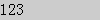
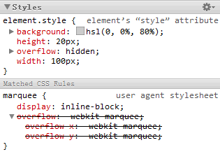
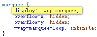
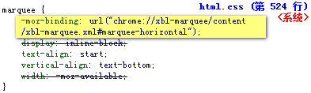

BX1018: 非 IE 浏览器中为 MARQUEE 元素设置某些 CSS 特性会导致其失去滚动效果
标准参考
MARQUEE 元素用来创建一个文字滚动区域，并提供了一些特有的属性、方法及事件。
MARQUEE 元素不是 W3C 规范中的元素，它最初由 IE2.0 引入，然而目前所有主流浏览器均支持 MARQUEE 元素。
关于 MARQUEE 元素的详细信息，请参考：MSDN、Mozilla Developer Center、Safari Reference Library。
问题描述
默认情况下，
- WebKit 内核浏览器会将 MARQUEE 元素设置一个 overflow:-webkit-marquee，使其可以实现滚动特效，若用户定义了其他 'overflow' 特性的值，则会导致 MARQUEE 元素的滚动效果消失。
- Opera 会将 MARQUEE 元素设置一个 'display:-wap-marquee'，使其可以实现滚动特效，若用户定义了其他 'display' 特性的值，则会导致 MARQUEE 元素的滚动效果消失。
- Firefox 会将 MARQUEE 元素设置一个 '-moz-binding:url("chrome://xbl-marquee/content/xbl-marquee.xml#marquee-horizontal")'，使其可以实现滚动特效，若用户定义了其他 '-moz-binding' 特性的值，则会导致 MARQUEE 元素的滚动效果消失。
造成的影响
在非 IE 浏览器中为 MARQUEE 元素覆盖了上面所描述的 CSS 特性的默认值，则会导致 MARQUEE 元素失去滚动效果。
受影响的浏览器
| Firefox | 若用户定义了其他 '-moz-binding' 特性的值，则会导致 MARQUEE 元素的滚动效果消失。 |
|---|---|
| Chrome Safari | 若用户定义了其他 'overflow' 特性的值，则会导致 MARQUEE 元素的滚动效果消失。 |
| Opera | 若用户定义了其他 'display' 特性的值，则会导致 MARQUEE 元素的滚动效果消失。 |
问题分析
各浏览器可以影响 MARQUEE 元素滚动效果的 CSS 特性不同，下面分情况进行讨论，首先分析 WebKit 内核的浏览器——Chrome 和 Safari 与 'overflow' 特性的关系：
默认情况下 WebKit 内核的浏览器会将 MARQUEE 元素设置一个 'overflow:-webkit-marquee'，使其可以实现滚动特效，若用户定义了其他 'overflow' 特性的值，则会导致 MARQUEE 元素的滚动效果消失。
分析以下代码：
<marquee style="width:100px; height:20px; background:#CCC; overflow:hidden;">
123
</marquee>
上面 MARQUEE 元素被设置了 overflow:hidden;。在各浏览器中效果如下：
| IE6 IE7 IE8 Firefox Opera | Chrome Safari |
|---|---|
|  |
可见，在 Chrome Safari 中，由于 overflow:hidden; 导致 MARQUEE 元素原有的滚动效果消失。
这是因为在 WebKit 内核中，浏览器通过为 MARQUEE 元素设置一个值为 '-webkit-marquee' 的 'overflow' 特性使其具备滚动效果：

而当我们为 MARQUEE 元素设置了一个其他的 'overflow' 特性值后，如测试样例中，则在 WebKit 内核浏览器中就会使 MARQUEE 元素失去滚动效果：

接下来再分析 Opera 浏览器与 'display' 特性的关系：
默认情况下 Opera 会将 MARQUEE 元素设置一个 'display:-wap-marquee'，使其可以实现滚动特效，若 用户定义了其他 'display' 特性的值，则会导致 MARQUEE 元素的滚动效果消失。
分析以下代码：
<marquee style="width:100px; height:20px; background:#CCC; display:inline-block;">
123
</marquee>
上面 MARQUEE 元素被设置了 display:inline-block;。在各 浏览器中效果如下：
| IE6 IE7 IE8 Firefox Chrome Safari | Opera |
|---|---|
可见在 Opera 中，由于 'display:inline-block;' 导致 MARQUEE 元素原有的滚动效果消失。
这是因为在 Opera 中，浏览器通过为 MARQUEE 元素设置一个值为 '-wap-marquee' 的 'display' 特性使其具备滚动效果：

而当我们为 MARQUEE 元素设置了一个其他的 'display' 特性值后，如测试样例中，则在 Opera 中就会使 MARQUEE 元素失去滚动效果：

最后看看 Firefox 浏览器与 '-moz-bind' 特性的关系：
默认情况下 Firefox 会将 MARQUEE 元素设置一个 '-moz-binding:url("chrome://xbl-marquee/content/xbl-marquee.xml#marquee-horizontal")'，使其可以实现滚动特效，若用户定义了其他 '-moz-binding' 特性的值，则会导致 MARQUEE 元素的滚动效果消失。
分析以下代码：
<marquee style="width:100px; height:20px; background:#CCC; -moz-binding:none;">
123
</marquee>
上面 MARQUEE 元素被设置了 -moz-binding:none;。 在各浏览器中效果如下：
| IE6 IE7 IE8 Chrome Safari Opera | Firefox |
|---|---|
可见在 Firefox 中，由于 '-moz-binding:none;' 导致 MARQUEE 元素原有的滚动效果消失。
这是因为在 Firefox 中，浏览器通过为 MARQUEE 元素设置一个值为 'url("chrome://xbl-marquee/content /xbl-marquee.xml#marquee-horizontal")' 的 '-moz-binding' 特性使其具备滚动效果：

这是由于 MARQUEE 元素在 Firefox 中使用 DIV 元素模拟。在 Mozilla Developer Center 中关于 MARQUEE 元素叙述中特别提到：
MARQUEE 元素在 Firefox 中是以 XBL 插件的形式实现的其功能。这个插件地址为：http://mxr.mozilla.org/firefox/source/layout/style/xbl-marquee/xbl-marquee.xml。
所以假设我们为 MARQUEE 元素设置了一个其他的 '-moz-binding' 特性值后，如测试样例中，则在 Firefox 中就会使 MARQUEE 元素失去滚动效果：
而 IE 中，MARQUEE 元素则不受到任何 CSS 特性的影响。
解决方案
首先 MARQUEE 元素为非 W3C 标准元素，应尽量避免使用。若必须使用，则应尽量避免为 MARQUEE 元素设置其默认值之外的 'overflow'、 'display'、'-moz-bind' 特性值。
参见
知识库
相关问题
测试环境
| 操作系统版本: | Windows 7 Ultimate build 7600 |
|---|---|
| 浏览器版本: |
IE6 IE7 IE8 Firefox 3.6.3 Chrome 6.0.408.1 dev Safari 4.0.5 Opera 10.53 |
| 测试页面: | marquee_ineffective.html |
| 本文更新时间: | 2010-07-10 |
关键字
MARQUEE overflow -webkit 溢出 跑马灯 display -moz